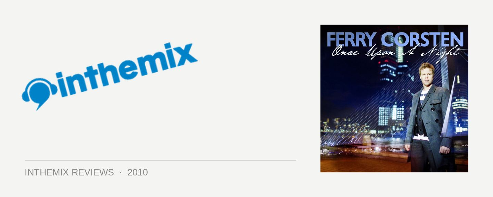

Various Artists - Once Upon a Night, Mixed by Ferry Corsten
When Ferry Corsten released his third artist album Twice In A Blue Moon in late 2008, he was looking pretty much untouchable. How was it that this veteran of the trance scene, who’d been delivering anthemic monsters for over a decade and outlasted nearly every other late ‘90s producer, had released an album during one of the scene’s most vibrant periods that simultaneously held its own, as well as sounding so utterly unique? It seemed like Ferry would keep up this incredible momentum forever – and in 2010 he’s back to try and prove it again with the first in his new compilation series Once Upon A Night, which he’ll also be taking around the world on a themed tour. So, is Ferry still firing on all cylinders?
The first disc opens with the cruisy vocal trance of Yuri Kane, immediately pitching things at a slower BPM, and he keeps this rolling with the rising strings of Alpha 9’s Come Home. It’s deep, but still melodic, in classic Ferry style. Things are kept at a moderate pace, until Ashley Walbridge slams out one of his trademark broken electro basslines. His remix of Tritonal’s Forgive Me, Forget You is a devastating weapon that’s set to do some major damage in the clubs, and shows just how much ‘grunt’ you can inject into trance if you think outside the boundaries a little. Matching it in the ‘magical’ stakes is Arty’s symphonic Hope, the first real trance masterpiece of the year. These are the highlights though, as the momentum really does flatten out in the second half of the mix.
The second disc fires up with the epic vibes and rolling electro basslines of Mark Sixma’s Forsaken, which counts as one of Ferry’s trademark dramatic ‘hands-in-the-air’ moments – with the focus on the emotion tinged drama, rather than the euphoria. This sets the tone, and what follows is a set of surprisingly deep trance. There’s knockout moments of beauty like Bart Claessen’s emotive tech-trance stormer Hartseer, and Rafael Frost’s stunning If Only. However, there’s also a genuine diversity in the sounds on offer.
Interestingly though, there’s a certain ‘flatness’ that pervades the mix – far from the ‘power Ferry’ of old, it’s like the Dutch trance master didn’t want to let it peak too hard, or tumble into any of the breakdowns or build-ups that were a mainstay even when he was at his most edgy (ironically though, this is before he slams in his own latest banger under the Pulse alias). This is all well and good, except there’s not really any precision in the programming to draw it all together, and offer it coherence as a whole.
If you contrast Once Upon A Night to Armin van Buuren’s latest A State of Trance compilation, which is a fairly dull affair bereft of any real surprises, here Ferry takes us a lot deeper. However, he doesn’t really hit on point and draw the different sounds together properly. Perhaps it’s reflection of how Ferry was never quite as good a DJ as he was a producer – the flow just isn’t there on either mix. It’s far from a total misstep, though; it’s a solid if somewhat unremarkable compilation, but a worthy purchase for all the Ferry Corsten diehards out there.
Once Upon A Night is out now on 405 Recordings through Stomp.